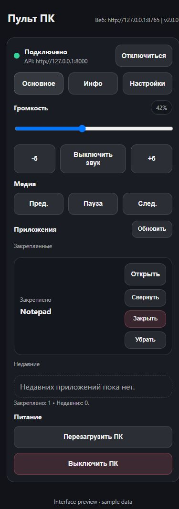
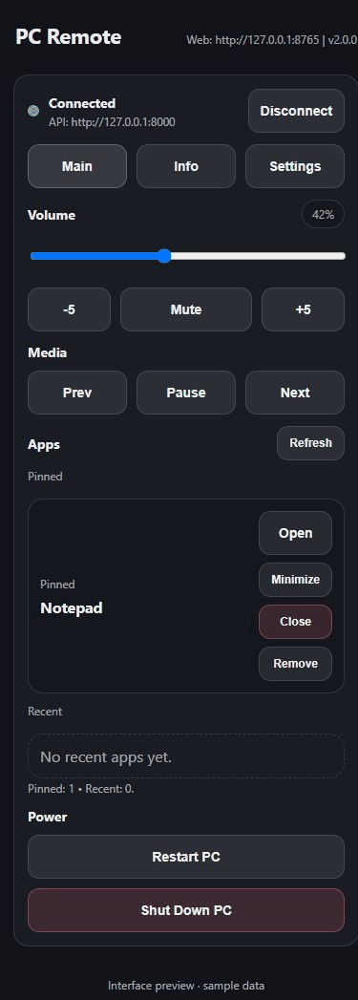

Громкость компьютера с телефона через Wi-Fi
Бесплатный пульт для Windows и Mac в браузере Android или iPhone.
Когда это удобно
Компьютер подключён к телевизору, а ты сидишь на диване. Вместо поиска клавиатуры открой пульт на телефоне и убавь громкость или поставь воспроизведение на паузу.
Как управлять громкостью
- Запусти PC Remote на компьютере и подключи телефон к той же сети Wi-Fi.
- Открой QR-код из меню приложения и отсканируй его.
- На вкладке «Главное» передвинь ползунок громкости, нажми −5 / +5 или отключи звук.
Рядом находятся кнопки управления воспроизведением и запуска приложений. На Mac медиакнопки управляют Music.

Посмотри, как выглядит пульт

Запись настоящего интерфейса с тестовыми ответами. Это не запись управления физическим компьютером.